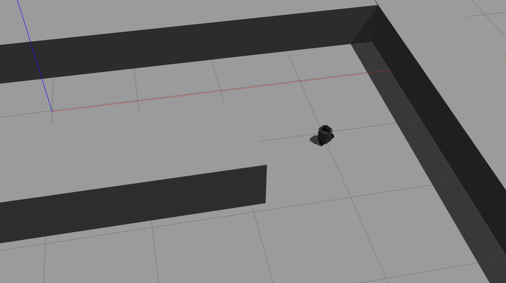

Profile
Recent MSc AI graduate with a focus on computational neuroscience and a strong interest in biologically inspired computation and continuous-time information processing.
Academic Interests
- Biologically plausible learning algorithms
- Meta-learning & plasticity
- Spiking neural networks
- Reservoir computing
- Neuromorphic hardware
- Reinforcement learning
- Computational models of attention
- Simulation & modeling of control behavior
Technical Skills
Programming
ML & AI
Libraries
NLP
Tools
Education
MSc Artificial Intelligence
Eötvös Loránd University · Budapest, Hungary
BSc Computer Science
University of Debrecen · Debrecen, Hungary
Experience
Analyst
ConsumerCentrix · Budapest, Hungary
- Identified gender-disaggregated economic indicators and conducted secondary research on developing economies to support country-level WE-FI initiatives.
- Led an internal review of knowledge management practices, producing a structured action plan to reduce fragmentation in shared files and workflows.
University AI Summer Lab
Eötvös Loránd University · Budapest, Hungary
- Developed custom RL environments using Gymnasium, Pygame, and Pymunk to enable controlled experimentation on a 2D navigation task.
- Conducted research on Spiking Neural Network models, achieving 85% of baseline rewards while reducing convergence time by 50% for SNN policies.
Web Development Internship
Lime Light Renhold · Oslo, Norway
- Implemented front-end components using HTML, CSS, and JavaScript under the supervision of a professional web development team.
- Contributed to the development of functional websites featuring interactive UI elements such as parallax effects and card-based layouts, delivering tasks within established project guidelines.
Certifications
NVIDIA Fundamentals of Deep Learning
Microsoft MIT Python Certificate
Projects
A test-bed framework for integrating and testing various SNN methods in an RL setting. Includes a custom racing simulator built with Pygame & Pymunk.
This project was submitted as part of a thesis research project during my Masters degree in Artificial Intelligence at ELTE university, Budapest.
The earliest version of the simulation started as a course project during the fall semester of 2023.
The primary objective of this research is to investigate the viability of Spiking Neural Networks (SNNs) within the context of Reinforcement Learning (RL).
Specifically, it seeks to evaluate whether SNNs can perform effectively in RL settings and to explore their potential advantages over traditional Artificial Neural Networks (ANNs).
Conducting this study in a simulated environment provides the necessary control for experimentation and analysis while also addressing challenges associated with real-world applications.
- Compare SNNs to ANNs in the context of RL and robotics in order to explore their advantages and limitations.
- Explore various SOTA methodologies in relation to SNNs and computational neuroscience within the outlined context.
- Explore the sim2real gap by deploying trained models into robotics.
- Explore the effeciency and challenges of neuromorphic hardware.


Predicting the lorenz attractor using a spiking reservoir and studying the effects of various bio-plausible methods on learning.
A collection of computational neuroscience implementations, studies, and explorations.
Interactive platform that generates images from textual scene descriptions using Stable Diffusion and retrieval-augmented generation.
A search and rescue (SAR) implementation in PettingZoo with Pytorch.
A Web service intended for matching dog walkers and dog owners locally.